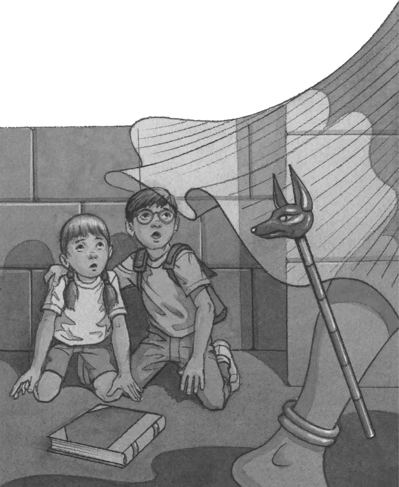

“Where did he go?” said Jack.
He and Annie peeked through the hole in the wall. They saw a long hallway. Burning torches lit the walls. Dark shadows loomed.
“Let’s go in,” said Annie.
“Wait,” said Jack.
He pulled out the Egypt book and turned to the section on pyramids.
He read the caption aloud:
Pyramids were sometimes called Houses of the Dead. They were nearly all solid stone, except for the burial chambers deep inside.
“Wow. Let’s go there. To the burial chambers,” said Annie. “I bet a mummy’s there.”
Jack took a deep breath.
Then he stepped out of the hot, bright sunlight into the cool, dark pyramid.
The hallway was silent.
Floor, ceiling, walls—everything was stone. The floor slanted up from where they stood.
“We have to go farther inside,” said Annie.
“Right,” said Jack. “But stay close behind me. Don’t talk. Don’t—”
“Go! Just go!” said Annie. She gave him a little push.
Jack started up the slanting floor of the hallway.
Where was the cat?
The hallway went on and on.
“Wait,” said Jack. “I want to look at the book.”
He opened the Egypt book again. He held it below a torch on the wall. The book showed a drawing of the inside of the pyramid.
“The burial chamber is in the middle of the pyramid. See?” Jack said. He pointed to the drawing. “It should be straight ahead.”
Jack tucked the book under his arm. Then he and Annie headed deeper into the pyramid.
Soon the floor became flat. The air felt different—musty and stale.
Jack opened the book again. “I think we’re almost at the burial chamber. See the picture? The hallway slants up. Then it gets flat. Then you come to the chamber. See, look—”
“Eee-eee!” A strange cry shot through the pyramid.
Jack dropped the Egypt book.
Out of the shadows flew a white figure.
It swooshed toward them!
A mummy! Jack thought.
“It’s alive!” Annie shouted.
